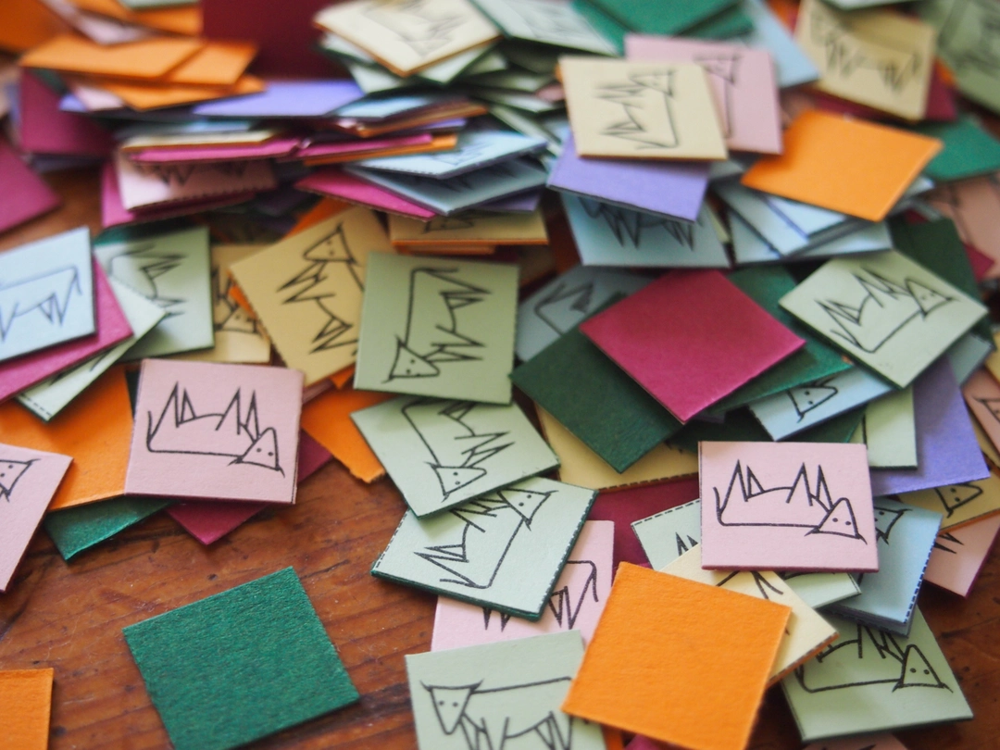
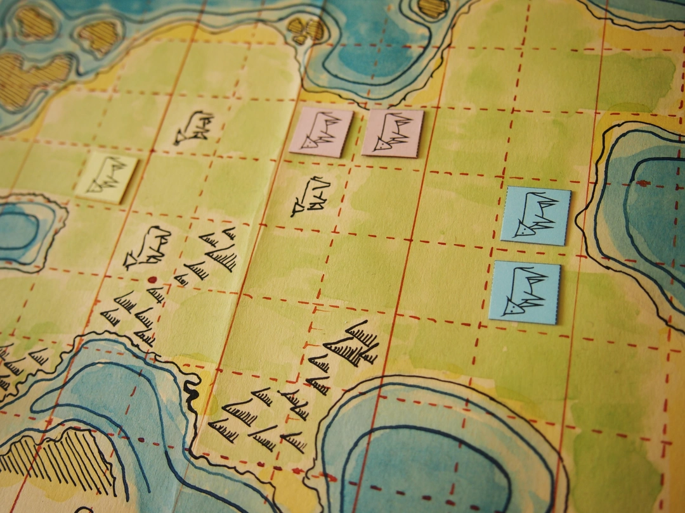

Land
A game about the rules of
ownership, fairness ... and cows
Download the Game Rules (PDF)FACILITATOR'S GUIDE
Land is a game and activity designed to incentivise questions about our economic systems, the concept of property, fairness, and the rules and narratives that we abide by in life. It is best played among three or four players, but if only two players are available, then the facilitator can also play with them.
Activity phases
Opening: The activity is introduced and contextualized as an exercise in thinking about fairness and our society.
Rules: The rules of the game are read out loud
Playing: participants are divided in groups of three or four. Ideally there is a facilitator in each group, but they could also play on their own.
Rules discussion: after they play two or three games, the facilitator invites participants to discuss and change the rules of the game.
Play with changed rules: participants play another two or three rounds with the new rules. After these rounds, the facilitator asks if the rules did what they expected, if they made the game more fair, and if they would like to propose different changes.
The Rules Discussion and Play with changed Rules phases can be repeated as many times as time allows and as long as players are engaged.
Closing: Participants are brought together and invited to discuss the connection between the rules in Land and those from systems they participate in, in real life.
Example session
- The facilitator introduces the activity and the game.
- The facilitator reads out loud the rules. Not all details are explained at the beginning; some of them (e.g., reclaiming a cow or mountain, or skipping play when starting is not possible) can wait until the situation arises.
- Participants play three rounds, each taking a couple of minutes. Some participants complain about rules, the facilitator takes notes and gently suggests them to make a mental note, but to keep playing for now.
- After three rounds, the facilitator asks: "How fair do you think the game's rules are?". Some players engage in a short discussion about what fair actually is. The facilitator does not provide any definition, but follows with the question: "Which rules would you change to make it more fair?". A short freeform discussion ensues, and the facilitator genly pushes for specific changes in the rules. Participants come up with three, but they decide to try only one of them. The facilitator then asks "How do you think this will make the game more fair? What do you expect will happen?". Some participants express their opinions as they prepare to start a new game.
- Participants play two more games, trying out the new rule. The facilitator then asks "Do you think the game is now more fair? Was the result what you expected?". They can also invite to further experimentation.
- This cycle of ask - try - discuss can be done as many times as desired and as long as there is time and interest from participants.
- The facilitator can then lead the conversation towards paralellisms between the game and real life, especially our economic system. Topics of interest can be privileges, different backgrounds and possibilities in life, accumulation of wealth, etc. The facilitator can also point out to rules that were not considered by players, for example, the winning condition, and use that to bring up the topics of blind spots and our social narratives.
Working with big groups
If there are too many participants, and facilitators cannot be next to each playing group, then they could be provided with a printout of the rules, asked to play on their own for some amount of time (e.g. 10 minutes), and afterwards bring everyone together to discuss changes to the rules.
Participants could then go back to their previous group to play with the modified rules they proposed, or they could re-group depending on which changes they want to implement. In this way, different players can experiment with different rules. At the end, they would all come back together for the closing phase.
This means all participants come together for the Opening, Rules, Rules Discussion and Closing phases, but would organize in groups for the Playing and Play with changed rules phases.

